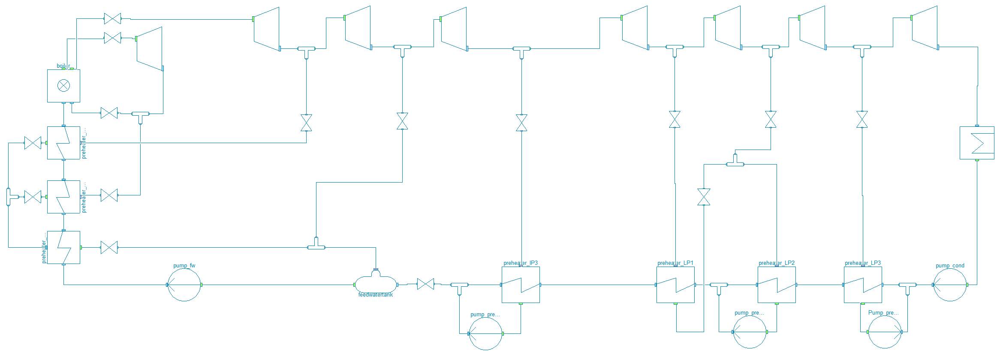
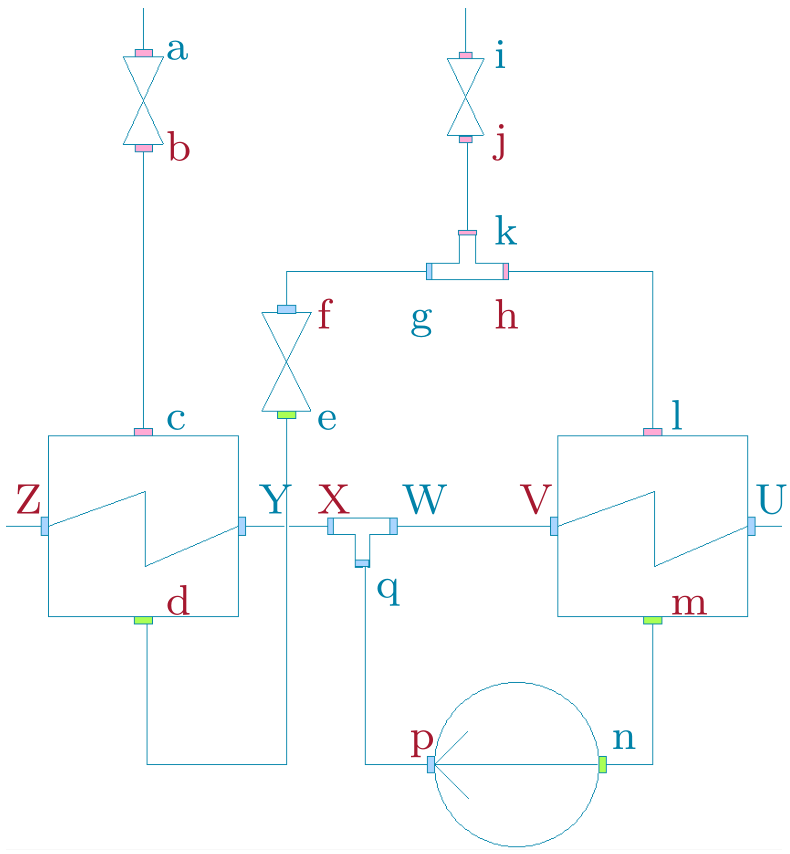

StaticCycles
Created Friday 25 April 2014

The package StaticCycles contains models that are simplified versions of similar dynamic models. The models compute unique stationary values which interact with their dynamic versions in order to specify the configuration of the simulation.
The main purpose of the models of the StaticCycles models is to compute and provide suitable start or nominal values for their dynamic equivalent.
In contrast to common Modelica models the StaticCycles models cannot simply be connected with each other although containing the same type of connector. The special case of operating with fixed=false parameters as pseudo variables makes it necessary to take care of the availability of certain variables/parameters. Hence the models of this package exchange data via so called SteamSignal connectors specified in SteamSignal_blue, SteamSignal_green and SteamSignal red. Models can only be connected provided that the according inlet and outlet connector have the same colour which ensures a feasible combination of internally and externally computed parameters in each model.
Example of Usage
Below a detailed drawing is illustrated in which two preheater models are connected with each other directly and via valve and mixer models.

One can see that only inlet and outlet ports with matching colours are connected.
By choosing suitable valve or mixer types the StaticCycle model can be adapted to a particular situation with prescribed boundary conditions. In this way the logical chain regarding the exchanged parameters can be cut when necessary and conflicting parameter declarations are avoided. In particular the following signals are handled at the condensing steam positions a to q and at the feedwater positions U to Z. In the above figure, blue letters refer to inlet connector, red letters refer to outlet connectors..
a: (inlet) - enthalpy given by upstream component (e.g. turbine), mass is given by downstream component (here HEX), pressure correlates with mass flow and nominal pressure difference
b: (outlet) - enthalpy equals inlet enthalpy (a), mass flow and pressure given by downstream component
c: (inlet) - enthalpy given by upstream valve, mass flow and pressure given by user
d: (outlet) - enthalpy equals bubble enthalpy, pressure and mass flow are given by user
e: (inlet) - enthalpy, pressure and mass flow are received from upstream HEX
f: (outlet) - enthalpy equals inlet enthalpy (a), mass flow and pressure given by downstream component - this is a loopbreaker for pressure
g: (inlet) - enthalpy and mass flow given by upstream valve, pressure defined by downstream mixer
h: (outlet) - enthalpy by energy balance, mass flow and pressure defined by downstream HEX inlet l
i: (inlet) - enthalpy given by upstream component (e.g. turbine), mass is given by downstream component (here HEX), pressure correlates with mass flow and nominal pressure difference
j: (outlet) - enthalpy equals inlet enthalpy (i), mass flow and pressure given by downstream component
l: (inlet) - enthalpy given by upstream mixer outlet (h), mass flow and pressure given by user
m: (outlet) - enthalpy equals bubble enthalpy, pressure and mass flow are given by user
n: (inlet) - equals HEX outlet m
p: (outlet) - enthalpy from user-given efficiency and inlet state, mass flow from inlet, pressure from downstream mixer
q: (inlet) - enthalpy and mass flow given by upstream pump, pressure defined by mixer outlet X
U: (inlet) - enthalpy and mass flow is given by upstream component (e.g. a pump)
V: outlet - enthalpy calculated by energy balance, mass flow from inlet, pressure from downstream component
W: (inlet) - enthalpy and mass flow given by upstream HEX, pressure defined by mixer outlet X
X: (outlet) - enthalpy and mass flow calculated via energy and mass balance, pressure given by downstream HEX inlet Y
Y: (inlet) - enthalpy and mass flow given by upstream mixer, pressure defined by HEX inlet Z
Z: (outlet) - enthalpy calculated by energy balance, mass flow from inlet, pressure from downstream component, e.g. a feedwater tank
List of Models
- Boiler
- Condenser
- Feedwatertank
- Fundamentals
- Mixer1
- Mixer2
- Mixer3
- Preheater1
- Preheater2
- Pump
- Pump real
- Reboiler
- Split
- Turbine
- Valve cut
- Valve dp nom1
- Valve dp nom2
- Valve dp nom3
Version History
07.08.2014 - Version:1.0 - Timo Tumforde
Backlinks: ClaRa:A User Guide:GettingStarted:Library Structure ClaRa:A User Guide:Revisions:v1.0.0 ClaRa:StaticCycles:Fittings:Mixer1 ClaRa:StaticCycles:Fittings:Mixer2 ClaRa:StaticCycles:Fittings:Mixer3 ClaRa:StaticCycles:Fittings:Split1 ClaRa:StaticCycles:Fittings:Split2 ClaRa:StaticCycles:Fittings:Split3 ClaRa:StaticCycles:Fittings:Split4 ClaRa:StaticCycles:Fittings:Split5 ClaRa:StaticCycles:Fittings:Split6 ClaRa:StaticCycles:Fittings:SprayAttemporator ClaRa:StaticCycles:Furnace:Boiler simple ClaRa:StaticCycles:Furnace:Burner1 ClaRa:StaticCycles:Furnace:Burner2 ClaRa:StaticCycles:Furnace:FlameRoom1 ClaRa:StaticCycles:Furnace:FlameRoom2 ClaRa:StaticCycles:Furnace:FlameRoom3 ClaRa:StaticCycles:HeatExchangers:Condenser ClaRa:StaticCycles:HeatExchangers:Preheater1 ClaRa:StaticCycles:HeatExchangers:Preheater2 ClaRa:StaticCycles:HeatExchangers:Preheater Delta T ClaRa:StaticCycles:HeatExchangers:Preheater twoShell ClaRa:StaticCycles:HeatExchangers:Reboiler ClaRa:StaticCycles:Machines:Pump ClaRa:StaticCycles:Machines:Pump2 ClaRa:StaticCycles:Machines:Pump3 ClaRa:StaticCycles:Machines:Pump real ClaRa:StaticCycles:Machines:Turbine ClaRa:StaticCycles:Storage:Feedwatertank3 ClaRa:StaticCycles:Storage:Feedwatertank4 ClaRa:StaticCycles:ValveConnects:Buffer cutFlow1 ClaRa:StaticCycles:ValveConnects:Buffer setFlow1 ClaRa:StaticCycles:ValveConnects:FlowAnchor constPressure1 ClaRa:StaticCycles:ValveConnects:FlowAnchor cutPressure1 ClaRa:StaticCycles:ValveConnects:PressureAnchor constFlow1 ClaRa:StaticCycles:ValveConnects:Tube1 ClaRa:StaticCycles:ValveConnects:Tube2 ClaRa:StaticCycles:ValveConnects:Valve cutPressure1 ClaRa:StaticCycles:ValveConnects:Valve cutPressure2 ClaRa:StaticCycles:ValveConnects:Valve dp nom1 ClaRa:StaticCycles:ValveConnects:Valve dp nom2 ClaRa:StaticCycles:ValveConnects:Valve dp nom3